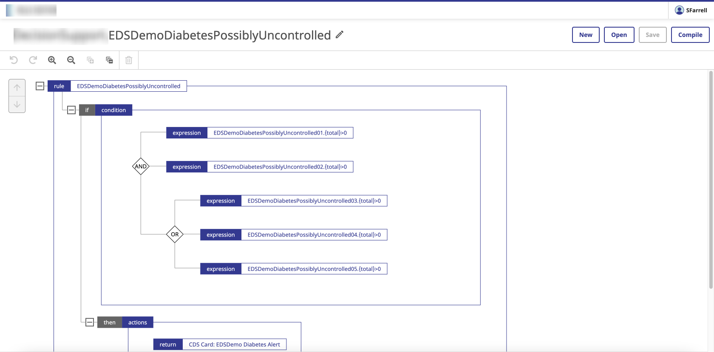
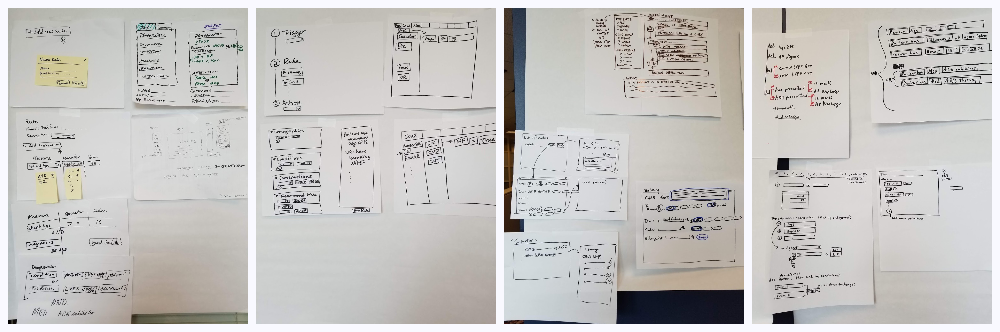
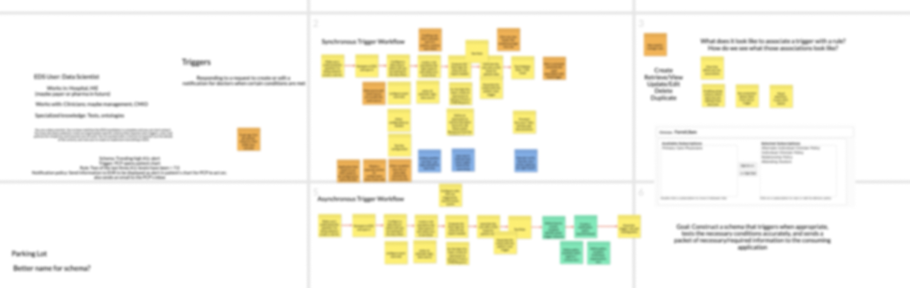
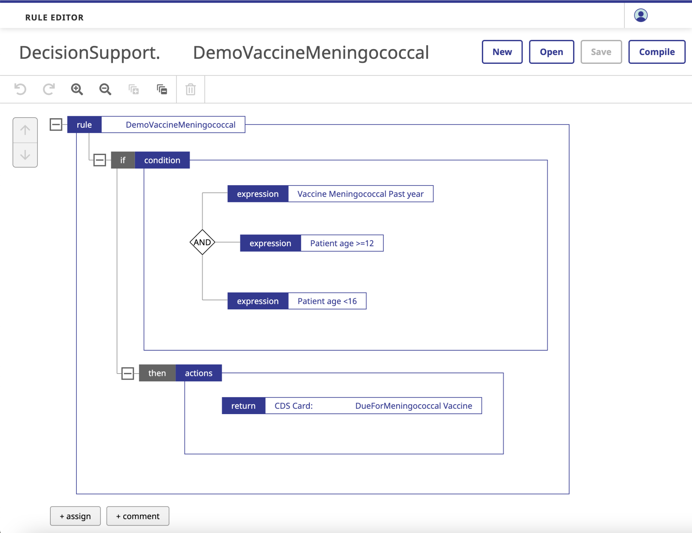
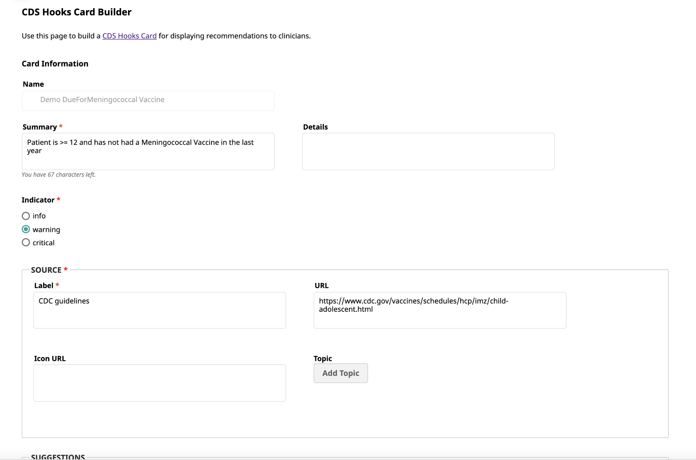
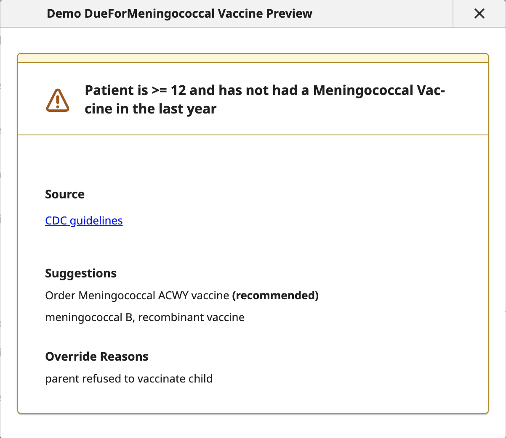

Clinical Decision Support Schema Builder
Tools for providing just-in-time clinical recommendations

The project
Helping healthcare information systems professionals build rule-based schemas to provide clinical recommendations to healthcare professionals on a just-in-time basis.
The problem
With the rapid pace of clinical research today, clinicians are finding it hard to keep up with the latest findings. They need just-in-time evidence-based treatment recommendations tailored to each patient’s unique health history and conditions.
My role
As lead UX designer, I worked with the product manager, visual designer, developers, QA engineers, technical writer, and reviewers.
The solution
We developed an alpha version of a rule-based system that scans a patient record for data points that meet certain criteria, such as a laboratory test result that is greater than a certain value. If these data points are found, the system returns a set of treatment recommendations, such as a medication to prescribe or a laboratory test to run.
The system has three components:
- A rule builder
- A recommendation builder
- A schema builder (trigger + rules + recommendations)
Outcome
When I left the project:
- The project had not yet begun alpha testing at customer sites, but had received positive feedback from internal stakeholders, including the sales team.
- Testing with user proxies found that users were able to complete most tasks with minimal assistance.
Process
Overall process
The design process for the different areas of the UI included most of the following steps. For details on the process for each area, see below.
- Design workshop
- Group heuristic review
- Requirements gathering
- Workflow analysis
- Low-fidelity designs and iteration
- High-fidelity designs and iteration
- User testing
Process notes: Schema builder update

- Early in the project, I led a group design workshop with the development and UX teams that also familiarized everyone with the clinical decision support space. However, the product manager ultimately decided to redesign a business logic rule builder from another product within the company.
- Once the business direction for the rule builder was final, I led a group heuristic review of the existing rule builder with the development and UX teams.
- I used the findings to design an updated UI that addressed the issues raised in the review, as well as incorporating the look and feel of the design system that the UX team was creating.
- When development of the minimum viable product was complete, I led a group usability test with the development and UX teams; the findings were rolled into Jira stories.
Process notes: Schema creation workflow optimization

- The development team had made a good start on the UI for associating rules with their triggers, inputs, and outputs, but wanted to optimize the workflow. To that end, I facilitated a group workflow analysis that allowed us to identify areas for improvement.
- I also provided visual design feedback on all of the screens in this UI, as well as providing mockups and UX feedback for the Settings screens.
Process notes: Recommendation builder

Associated rule

Recommendation builder

Recommendation preview
- When a rule’s conditions are met, the rule returns a set of treatment recommendations as a data object in a highly specified format. After familiarizing myself with the required format, I designed a prototype that allows users to enter recommendation information into the data object template.
- I also worked with our visual designer to create a high-fidelity mockup of the recommendation information for display to clinicians.